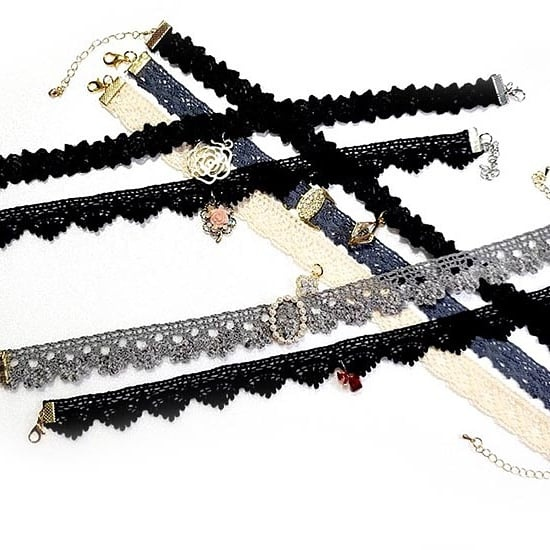

액세서리 하나가 스타일 전체를 완성시키기도 한다. 그러므로 여기 소개된 품목들이 옷과 여타 용품 일체에 미치는 영향이나 역할 또한 마찬가지이다.
포켓 스퀘어(pocket square)를 반드시 꽂아야 하는 것은 아니듯이, 어떤 액세서리는 그것의 필요 여부를 따져 스스로 선택할 수 있다. 하지만 대부분의 액세서리는 분명한 용도와 확실한 의도를 지니고 있다. 단지 그것의 소재나 공정에 따른 고급스러움의 정도가 선택 사항이 되는 것이다.